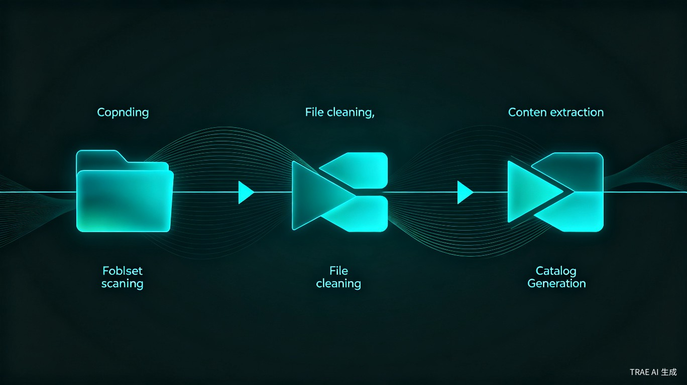
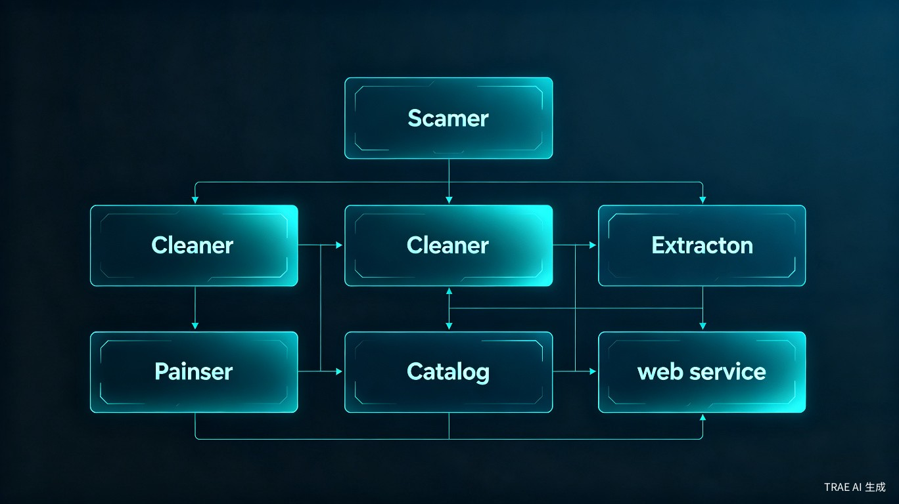

项目概述
企业数据资源通常分散在业务系统数据库、共享文件夹、Office 文档、PDF 文件、压缩包、代码工程和各类历史资料中。结构化数据有表结构但缺少业务语义，非结构化文档有业务价值但难以检索，Excel 表格常承载关键指标但缺乏统一元数据。现有人工盘点方式依赖目录命名、人工阅读和 Excel 登记，容易遗漏、难以复用，也无法持续追踪变化。
核心定位：把分散、隐含、难检索的数据资源转化为统一的数据资产目录。工具在本地环境运行，默认只读扫描源数据，不修改业务系统和源文件。扫描结果形成可审阅、可检索、可导出、可追溯的资源目录。
建设目标
资源发现
对指定文件夹或数据库连接进行只读扫描，递归发现可盘点资源
文件清洗
格式分析、同名多版本去重、业务聚焦筛选，生成精简的业务文件夹
元数据解析
对数据库、Excel、Word、PDF、图片、压缩包提取结构化元数据
语义治理
根据字段名、表名、文档标题推断业务含义，标记敏感字段
人工确认
低置信结果交由 Owner 审核，确保数据资产质量
目录服务
生成统一资源目录，支持查询、过滤、详情查看和导出
核心工作流
工具形成了从汇总文件夹到资源目录的完整闭环：

文件清洗流程
用户将业务相关的所有文档资料汇总到一个文件夹后，工具首先执行文件清洗：
| 步骤 | 操作 | 说明 |
|---|---|---|
| 1 | 格式分析 | 生成文件格式分布报告，统计扩展名、大小、时间分布 |
| 2 | 同名多版本检测 | 按修改时间、版本号、文件大小判断最新版本 |
| 3 | 业务流程排序 | 根据用户配置的业务流程阶段对文件排序 |
| 4 | 无关文件剔除 | 自动剔除系统文件、临时文件，标记备份和个人文件 |
| 5 | 用户审阅确认 | 审阅清洗结果，确认删除和保留决策 |
多格式深度提取
清洗完成后，工具按文件类型执行深度内容提取，支持多种格式：
| 文件类型 | 提取内容 | 提取方式 |
|---|---|---|
| Excel | 工作表、表头、数据行、公式 | 直接读取 |
| Word | 内嵌表格、段落文本 | 表格定位提取、文本 NER |
| PDF (文本型) | 文本块、表格区域 | PDF 解析器 |
| PDF (扫描型) | 页面图像 | OCR 识别 |
| PPT | 幻灯片标题、文本框、表格 | 幻灯片解析 |
| 图片 | 图像中的文字、表格 | OCR 识别 |
| 压缩包 | 内部文件 | 递归解压后按类型提取 |
| 数据库 | 表结构、字段、数据 | Schema 解析 |
系统架构
系统由八个核心模块组成，各模块职责清晰、解耦设计：

文件清洗器
分析汇总文件夹、去重、版本判断、业务聚焦筛选
扫描探针
根据根路径或连接串发现资源
类型识别器
判断资源类型和解析方式
数据提取引擎
执行多格式深度内容提取、表格提取、NER、OCR
解析引擎
提取数据库、文档、表格和工程元数据
规则引擎
执行语义推断、敏感识别、抽取规则
目录生成器
统一建模并生成资源目录 (JSON-LD)
Web 服务
提供目录查看、检索、过滤、详情和导出
设计原则
只读探查
扫描过程不修改源文件、源数据库和业务系统，数据库连接默认使用只读模式
规则优先
语义推断和敏感识别优先使用本地规则、字典和正则，大模型仅在规则未命中时使用
人工确认后生效
自动推断结果默认为"建议态"，只有经过数据 Owner 确认后才能进入正式目录
元数据可追溯
每个资源都记录来源位置、解析规则版本、置信度和盘点时间
敏感信息最小化
日志、目录、样本和导出文件不得保留身份证号、银行卡号、手机号等明文敏感信息
脱水印前置
文档需先通过单位脱水印软件处理，工具识别并记录脱水印状态，未处理则禁止提取
核心功能亮点
字典辅助 NER 抽取
工具内置可配置的实体识别字典，支持从非结构化文本中抽取人物、时间、机构、装备、设施、地点、事件、金额、比例、状态等实体，将非结构化文档转化为结构化数据。
语义推断引擎
按优先级从高到低执行：标准字典精确匹配 > 同义词匹配 > 正则模式 > 上下文推断 > 历史映射记忆 > 模型推理。每条推断结果附带置信度和匹配依据。
敏感字段识别与脱敏
自动识别身份证号、手机号、银行卡号、邮箱、密码、Token 等敏感字段，在写入目录前完成脱敏处理，日志中不保留敏感明文。
实时提取反馈
提取过程中实时显示当前处理文件、进度、提取结果预览和异常提示，支持逐条确认、批量确认和自动导入三种模式。
血缘追溯
在资源详情页点击字段，查看上游来源、下游使用、候选关系和人工确认状态，支持外键、字段映射、文档抽取等多种血缘类型。
用户角色
| 角色 | 主要诉求 | 典型操作 |
|---|---|---|
| 平台管理员 | 本地部署、任务运行、配置管理 | 启动服务、配置扫描范围、管理规则 |
| 数据治理人员 | 资产覆盖率、目录质量、敏感字段 | 发起扫描、查看统计、导出目录 |
| 数据 Owner | 业务归属、标签准确性 | 确认业务标签、修正字段语义 |
| 文档解析工程师 | 文档结构、抽取规则效果 | 配置规则集、调试抽取效果 |
| 普通查询用户 | 查找可用数据资源 | 搜索资源、查看详情和血缘 |
迭代规划
核心能力落地
本地文件夹扫描、文件清洗、脱水印状态记录、SQLite/Word/Excel/PPT/PDF/图片 OCR 解析、压缩包递归提取、字典辅助 NER、实时反馈、人工确认、资源目录生成、Web 浏览
审核与可视化增强
审核工作台、资源详情页增强、图谱视图、规则管理页、异常资源处理页、代码工程 API/模型解析
远程数据库与大模型
MySQL/PostgreSQL/SQL Server 只读连接、PDF 扫描版 OCR 增强、大模型抽取兜底、多语言 OCR
企业级演进
多用户权限、任务调度、增量扫描、DataHub/Neo4j 同步、企业认证和审计报表
技术选型
价值与意义
效率提升
将人工数天甚至数周的盘点工作压缩到数小时内完成，自动识别同名多版本、自动提取元数据、自动推断语义，大幅降低人工成本
数据资产化
将分散、隐含的数据资源转化为可检索、可追溯的统一资产目录，为企业数据治理和数据复用奠定基础
安全合规
只读扫描不修改源数据，自动识别和脱敏敏感字段，脱水印前置检查，满足企业安全管控要求